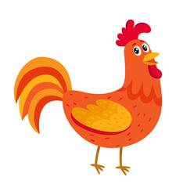
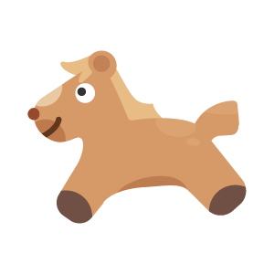

Animal in English
Farm Animals
These are the animals that live on a farm, and also animals like cats and dogs that are more domesticated.

Dog

Cow

Chicken

Horse
Forest Animals
Here you’ll find different animals that live in forests and mountain areas of the world.
- squirrel
- snail
- mouse
- chameleon
- deer
- raccoon
- moose
- antelope
- beaver
- weasel
Jungle Animals
- snake
- bat
- tiger
- leopard
- parrot
- eagle
- cockatoo
- hippopotamus
Aquatic Animals
- Turtle
- Reptile whose body is protected by a hard carapace of bony plates, inside which they can retract their head, limbs and tail.
- Octopus
- Marine mollusk without shell, with oval and very bulky head, large eyes, two gills and eight long tentacles with two rows of suckers.
- Frog
- Tailless amphibian, with smooth, shiny skin, stubby trunk, large head and bulging eyes, with highly developed hind limbs for jumping.
- Whale
- The whale, the largest animal on Earth, is a protected species fished for its blubber and baleen.